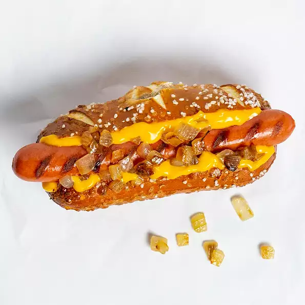

Hot Dog

Description
Enjoy the game with a Wiz Wit hot dog: grilled NY-style beef frank dressed up with caramelized onion and Cheez Whiz®, served on a pretzel roll.
Ingredients
- 1 Dietz & Watson Natural Casing NY Style Beef Frank
- 1 pretzel roll
- 2 tablespoons caramelized onions
- 2 tablespoons processed cheese spread (such as Kraft® Cheez Whiz®)
Directions
- Preheat a grill for medium-high heat. Cook beef frank on preheated grill, turning occasionally, until golden brown, 3 to 4 minutes. Place grilled Beef Frank in pretzel roll.
- Finish with caramelized onions and Cheez Whiz®.